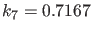
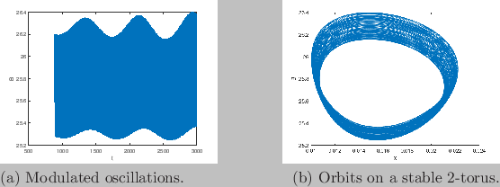

Next: Poincaré section and Poincaré Up: Time integration Previous: Jacobian matrices Contents
To start a time integration from this NS point, with a slightly supercritical parameter value, namely , we can use the commands
X0=[1.8609653;25.678306;0.010838258;0.094707061];
P0=[0.1631021;1250;0.046875;20;1.104;0.001;0.71643356;0.1175;0.5];
P0(7)=0.7167;
hls=feval(@SteLar);
options=odeset('RelTol',1e-8);
[t,y]=ode45(hls{2},[0,3000],X0,options,0.1631021,1250,0.046875,20,1.104,
0.001,0.7167,0.1175,0.5);
size(t)
size(y)
plot(t(100000:339000),y(100000:339000,2));
'press any key'
pause
plot(y(100000:339000,3),y(100000:339000,2));
After a transient the time-series exhibits modulated oscillations with two frequencies near the original limit cycle (see Fig. 7). This is a motion on a stable two-dimensional torus that arises from the Neimark-Sacker bifurcation. The commands can be executed by running the testrun testtimeinteg.m. The total number of computed points is 339161.
|  |
The testrun testtimeintegJacobian.m
X0=[1.8609653;25.678306;0.010838258;0.094707061];
P0=[0.1631021;1250;0.046875;20;1.104;0.001;0.71643356;0.1175;0.5];
P0(7)=0.7167;
hls=feval(@SteLar);
options=odeset('RelTol',1e-8);
options = odeset('Jacobian',hls(3),'JacobianP',hls(4),
'Hessians',hls(5),'HessiansP',hls(6));
[t,y]=ode45(hls{2},[0,3000],X0,options,0.1631021,1250,0.046875,20,
1.104,0.001,0.7167,0.1175,0.5);
size(t)
size(y)
plot(t(100000:325000),y(100000:325000,2));
'press any key'
pause
plot(y(100000:325000,3),y(100000:325000,2));
is a small modification of testtimeinteg.m in which the solver has access to the Jacobian matrix. The graphical output is similar, but the number of computed points is now 328197.